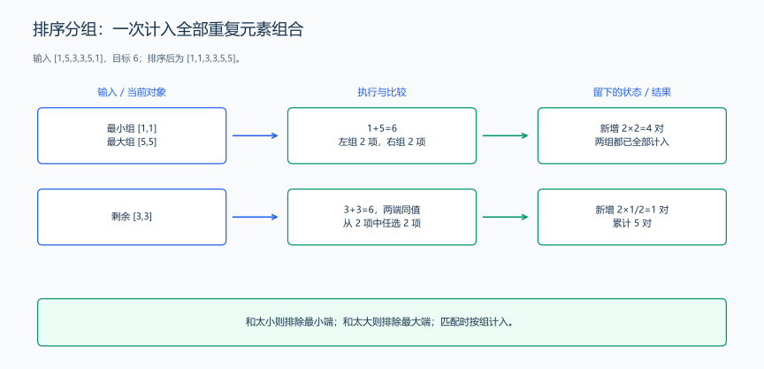
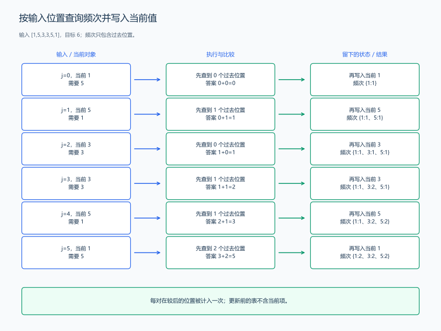
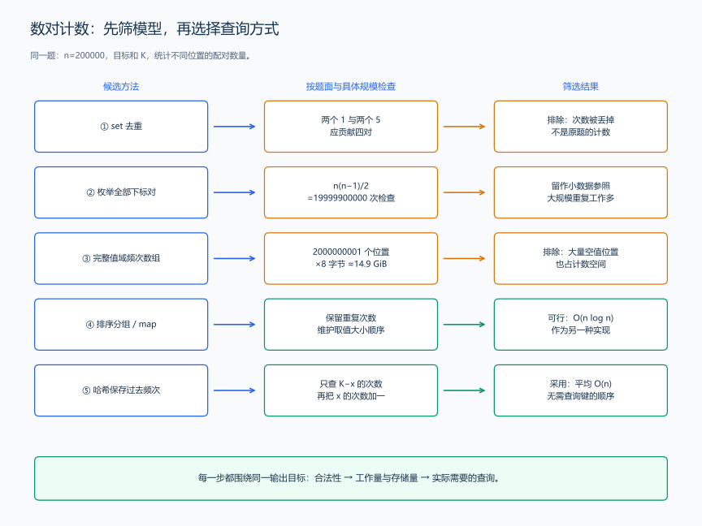

（十二） 一题多建模与最优方法的选择过程
面对同一道题，先提出几种表示和计算方法，再判断它们是否计算同一份合法方案。下面保留一个数对计数目标，依次构建枚举下标、排序分组、过去频次三种模型，随后代入规模逐项筛选，说明最后采用哪种方法。
1. 完整题面与下标对模型
题目原文（自拟）： 给定 n 个整数和目标 K，统计满足 \(0\le i<j<n\) 且 a[i]+a[j]=K 的下标对数量。不同下标对分别计数，即使取值相同。第一行输入 n、K，第二行输入 n 个整数；\(1\le n\le200000\)，\(-10^9\le a[i]\le10^9\)，\(-2\times10^9\le K\le2\times10^9\)。输出一行计数结果。
样例输入：
6 6
1 5 3 3 5 1样例输出：
5样例解释： 五个下标对为 (0,1)、(0,4)、(1,5)、(2,3)、(4,5)。其中四对由 1 与 5 组成，一对由两个 3 组成。
先把所有 i<j 的候选都列出来，再检查和。下面的函数需要 <vector>，参数是输入数组和目标值；可以单独与本节最后的调用程序组合。
long long countByEnumeration(const vector<long long> &a, long long target) {
long long answer = 0;
int n = static_cast<int>(a.size());
for (int i = 0; i < n; ++i) {
for (int j = i + 1; j < n; ++j) {
// 每个不同位置的无序下标对恰好检查一次。
answer += a[i] + a[j] == target;
}
}
return answer;
}分析： n 个位置有 n*(n-1)/2 对，时间为 \(O(n^2)\)，额外空间为 \(O(1)\)。n 为 200000 时，要检查 19999900000 对。模型清楚，适合手算和核对小数据，但这里仍有大量重复的取值比较。
2. 排序后按相同取值成批计数
这道题只求数量，不输出原下标。排序把位置重新排列，但每个元素仍作为一个独立元素保留；排序前后的两元素组合存在一一对应，和也没有变化，因此数量不变。这与“原顺序连续分组”的反例不同：那里排序改变了哪些组合法。
排序后得到 [1,1,3,3,5,5]。让 left 指向最小值，right 指向最大值：
- 和小于 K：当前最小值与剩余最大的值相加仍不够，换其他更小的搭档也不够，因此跳过这个最小值。
- 和大于 K：当前最大值与剩余最小的值相加仍偏大，换其他更大的搭档也偏大，因此跳过这个最大值。
- 和等于 K：两端取值不同，就统计两端各有多少项，将数量相乘；两端取值相同，就从剩余项中任选两项。

样例中两项 1 与两项 5 贡献 2×2=4 对；剩下两项 3 贡献 2×1/2=1 对，总计 5。这里的 m*(m-1)/2 来自：第一项搭配 m-1 项，第二项搭配 m-2 项，直到最后没有后续项。
下面的函数需要 <algorithm>、<vector>。数组按值传参，因此排序的是副本，调用者的数组可以继续用于其他方法。
long long countBySorting(vector<long long> a, long long target) {
sort(a.begin(), a.end()); // 将同值元素放到一起，便于成批计算。
int left = 0, right = static_cast<int>(a.size()) - 1;
long long answer = 0;
while (left < right) {
long long sum = a[left] + a[right];
if (sum < target) {
++left; // 当前最小值找不到足够大的搭档。
} else if (sum > target) {
--right; // 当前最大值找不到足够小的搭档。
} else if (a[left] == a[right]) {
long long length = right - left + 1;
answer += length * (length - 1) / 2; // 全部剩余项任选两项。
break;
} else {
long long leftCount = 1, rightCount = 1;
while (left + leftCount <= right && a[left + leftCount] == a[left]) {
++leftCount;
}
while (right - rightCount >= left && a[right - rightCount] == a[right]) {
++rightCount;
}
answer += leftCount * rightCount; // 每项左值都能搭配每项右值。
left += static_cast<int>(leftCount);
right -= static_cast<int>(rightCount);
}
}
return answer;
}代码解释： 每次移动排除的是已经证明不可能配成目标和的一端，匹配时则一次计入整组，不会丢掉重复元素。排序需要 \(O(n\log n)\) 时间，扫描时每个位置只被跳过一次，合起来仍为 \(O(n\log n)\)。本实现复制数组，额外空间为 \(O(n)\)。
3. 固定后来的位置，查询过去的频次
还可以从公式 a[i]+a[j]=K 得到 a[i]=K-a[j]。固定后来的位置 j，就只需知道过去有多少项等于 K-a[j]，不必逐个检查过去的下标。
用 frequency[value] 保存已经处理过的值的次数。先查询当前值需要的搭档，再把当前值加入表中；这样表里的位置都小于 j，自动满足 i<j。
| j | 当前值 | 需要的值 | 查询到的过去次数 | 新增对数 | 累计答案 |
|---|---|---|---|---|---|
| 0 | 1 | 5 | 0 | 0 | 0 |
| 1 | 5 | 1 | 1 | 1 | 1 |
| 2 | 3 | 3 | 0 | 0 | 1 |
| 3 | 3 | 3 | 1 | 1 | 2 |
| 4 | 5 | 1 | 1 | 1 | 3 |
| 5 | 1 | 5 | 2 | 2 | 5 |

正确性推导： 读到 j 时，每个已出现的搭档位置都小于 j，且值满足目标和，因此新增的配对全部合法。任一合法对 (i,j) 会在处理 j 时找到 i，不会漏掉；它也不会在其他步骤再次出现，因为较后的那个位置只有一个。
下面的函数需要 <unordered_map>、<vector>。find 查询频次而不创建新键；++frequency[x] 将当前值的次数加一。reserve(a.size()) 为预计的不同键数量预留桶，元素仍由后面的写入创建。
long long countByFrequency(const vector<long long> &a, long long target) {
unordered_map<long long, long long> frequency;
frequency.reserve(a.size()); // 提前准备桶，减少逐步扩容的次数。
long long answer = 0;
for (long long x : a) {
auto it = frequency.find(target - x);
if (it != frequency.end()) {
answer += it->second; // 每个过去的同值位置贡献一对。
}
++frequency[x]; // 查询之后才写入，当前项不会与自己配对。
}
return answer;
}代码解释： 处理完前 j 项后，表中恰好是这 j 项的频次，answer 恰好是两端都在这 j 项里的合法下标对数。一次查询与一次写入就把这个关系推进到下一项。
哈希把键分散到桶中，平均查询与写入时间为 \(O(1)\)，因此这个方法的平均总时间为 \(O(n)\)，额外空间为 \(O(n)\)。多个键落入同一桶时，需要继续比较这些键，碰撞集中会增加查找工作；使用 map 保存同一份频次时，总时间为 \(O(n\log n)\)。
4. 从候选模型逐步筛选到最终方案
同一题的几个正确做法，不是把复杂度排个名就完成选择。要先核对它们是否仍在计算题目要求的对象，再把题面的规模代入，最后比较留下的信息和每步的工作。
4.1 先核对合法方案和输出目标
本题计算的是不同位置组成的下标对数量。用样例中的两个 1、两个 5 检查候选模型：它们组成四对，而不是只组成一个取值组合。
| 候选模型 | 保留的信息 | 核对结果 |
|---|---|---|
枚举所有 i<j |
每个元素的位置和值 | 每对检查一次，得到 5 |
| 只用 set 保存出现过的值 | 出现过 1、3、5 | 丢掉重复次数，不能算出四对 1 与 5，排除 |
| 排序后按组计数 | 每项元素和同值组大小 | 保留元素个数，用组大小相乘，得到 5 |
| 保存过去频次 | 每个值在过去出现的次数 | 每对在较后位置处计入，得到 5 |
排序与频次都去掉了部分位置信息，但没有去掉计数需要的信息。这里每一对的较早、较后位置只用来避免重复计数；输出不要求列出它们的具体编号。
4.2 把最大输入代入工作量
取题面中的 n=200000，不要只写一个 O 符号：
| 方法 | 主要工作量的估算 | 本实现的额外空间 |
|---|---|---|
| 枚举下标对 | \(n(n-1)/2=19999900000\) 次配对检查 | \(O(1)\) |
| 排序分组 | \(n\log_2 n\approx3521928\) 的排序比较量级，再扫描 n 项 | \(O(n)\)，用于数组副本 |
| map 频次查询 | n 次查询、n 次写入，每次沿树查找约 \(\log_2 n\approx18\) 层 | \(O(n)\)，保存实际出现的键 |
| 哈希频次查询 | n 次查询、n 次写入；平均一次只需少量桶内比较 | \(O(n)\)，保存实际出现的键 |
这些数表示工作量，不能直接当成秒数。枚举要重复检查约 200 亿对；后三种方法把重复配对合并了。枚举函数仍可用于小数据对拍，但提交时不采用它。
再比较频次的存储方法。把值平移后直接用作数组下标，需要为 \(-10^9\) 到 \(10^9\) 的 2000000001 个值准备位置。每项计数用 8 字节，合计 16000000008 字节，约 14.9 GiB；输入却最多只有 200000 项。map 和哈希表只保存实际出现的键，避免给大量没有出现的值分配计数位置。因此，直接按完整值域开数组也被排除。
4.3 根据每一步需要的查询作出选择
剩下排序分组、map 频次和哈希频次，再回到每步的任务：读到 x，只查询“过去有多少个 K-x”，随后把 x 的频次加一。
- 不查询最小值、最大值或某个取值区间，也不按键顺序输出，因此不用维护键的大小顺序。
- 不必等全部输入排好序；读到一项就能确定它与过去的配对数，因此可以逐项查询频次。
- 输出只有一个总数，不恢复下标列表，因此每个值保存一个次数就够了。
据此选择 unordered_map 保存过去频次：平均时间为 \(O(n)\)，空间为 \(O(n)\)。这里从“需要的查询”得到了容器选择，而不是看到计数题就先套哈希表。
哈希查询要在桶内核对键，碰撞集中时会增加工作。排序分组和 map 频次提供 \(O(n\log n)\) 的另一种实现；排序分组已经写在前面，可以与哈希结果互相核对。

本题的选择结论： set 丢掉重复次数，首先排除；枚举保留全部信息但约有 200 亿次检查，留作小数据参照；完整值域数组约需 14.9 GiB，排除；排序分组和 map 可行，但维护了本题不查询的取值顺序，最后采用哈希频次。
4.4 沿着同一问题变化重新选择方法
方法选择依赖当前要做的事。把这道题稍作变化，选择过程也要重新走一遍：
| 具体任务 | 要增加或减少的信息 | 相应选择 |
|---|---|---|
| 只有 30 项，用来检查另一个程序 | 全部只有 435 个候选对 | 枚举最直接，适合作为参照答案 |
| 输入逐项到来，每读一项就输出当前配对总数 | 需要立刻查询过去，不能等待最后排序 | 逐项维护频次 |
| 取值为 0 到 1000 | 频次只需 1001 个位置，8 字节计数约占 7.82 KiB | 直接用频次数组，免去键查找 |
| 输入已经有序，只输出最后总数 | 已经有取值顺序，不必再排序 | 双指针按组计数，时间 \(O(n)\) |
| 要输出每一对的原下标 | 单个次数不能恢复具体位置 | 保存每个值对应的过去下标列表；输出 P 对本身就需要 \(O(P)\) 时间 |
最后一行也说明：“最优方法”要围绕输出目标讨论。若题目要打印约 200 亿对，光输出就有这么多工作；不能把只统计数量的程序直接拿来回答。
5. 从所选模型组装提交程序
计数结果可能达到 n*(n-1)/2；200000 项全能互相配对时，结果为 19999900000，所以 answer 使用 long long。每项输入能放进 int，累计答案仍可能需要更大的类型。
完整调用程序如下，与 countByFrequency 放在同一个文件中；头文件置于该函数之前。替换调用的函数名，就能比较其他两个模型，使用它们时同时加入 <algorithm>。
#include <iostream>
#include <unordered_map>
#include <vector>
using namespace std;
// 在这里放置上面的 countByFrequency 函数定义。
int main() {
int n;
long long target;
cin >> n >> target;
vector<long long> a(n);
for (auto &x : a) {
cin >> x; // 每个位置保留一个输入元素，重复值仍分别计数。
}
cout << countByFrequency(a, target) << '\n';
}